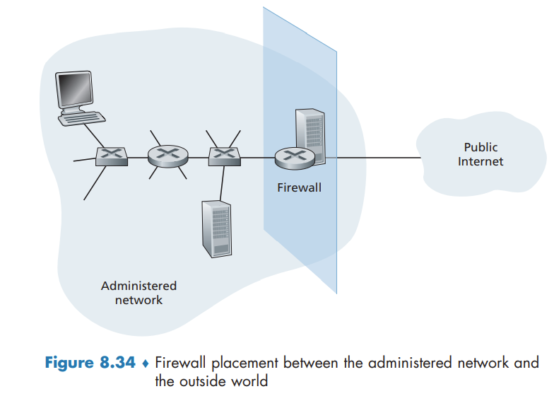

Operational Security Firewalls and Intrusion Detection Systems
Operational Security: Firewalls and Intrusion Detection Systems
Firewalls
A firewall is a combination of hardware and software that isolates an organization’s internal network from the Internet at large, allowing some packets to pass and blocking others

A firewall has three goals:
- All traffic from outside to inside, and vice versa, passes through the firewall.
- Only authorized traffic, as defined by the local security policy, will be allowed to pass.
- The firewall itself is immune to penetration.
Firewalls can be classified in three categories: traditional packet filters, stateful filters, and application gateways.
Traditional Packet Filters
A packet filter examines each datagram in isolation, determining whether the datagram should be allowed to pass or should be dropped based on administrator-specific rules. Filtering decisions are typically based on:
- IP source or destination address
- Protocol type in IP datagram field: TCP, UDP, ICMP, OSPF, and so on
- TCP or UDP source and destination port
- TCP flag bits: SYN, ACK, and so on
- ICMP message type
- Different rules for datagrams leaving and entering the network
- Different rules for the different router interfaces
Stateful Packet Filters
Stateful filters actually track TCP connections, and use this knowledge to make filtering decisions.
Application Gateway
what if the organization wants such privileged users to authenticate themselves first before being allowed to create Telnet sessions to the outside world? Such tasks are beyond the capabilities of traditional and stateful filters.
An application gateway is an application-specific server through which all application data (inbound and outbound) must pass.
Thus, the Telnet application gateway not only performs user authorization but also acts as a Telnet server and a Telnet client, relaying information between the user and the remote Telnet server.
Application gateways do not come without their disadvantages. First, a different application gateway is needed for each application. Second, there is a performance penalty to be paid, since all data will be relayed via the gateway. Finally, the client software must know how to contact the gateway when the user makes a request, and must know how to tell the application gateway what external server to connect to.